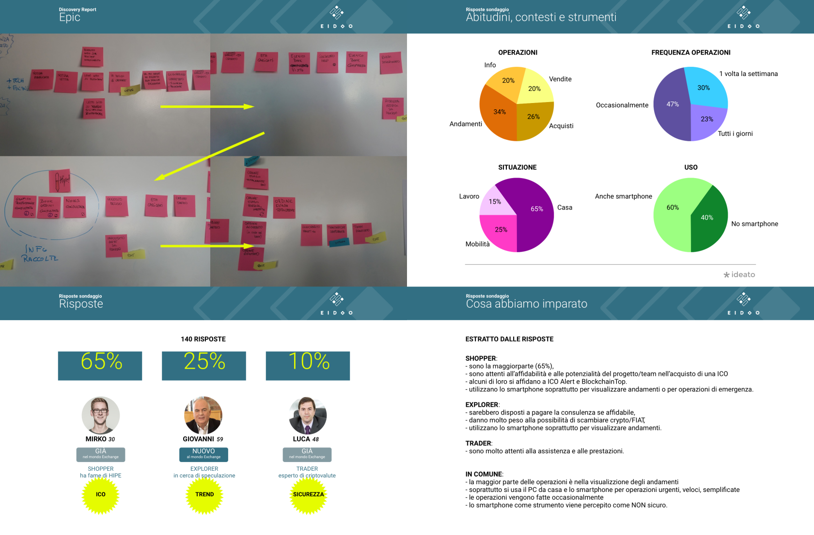
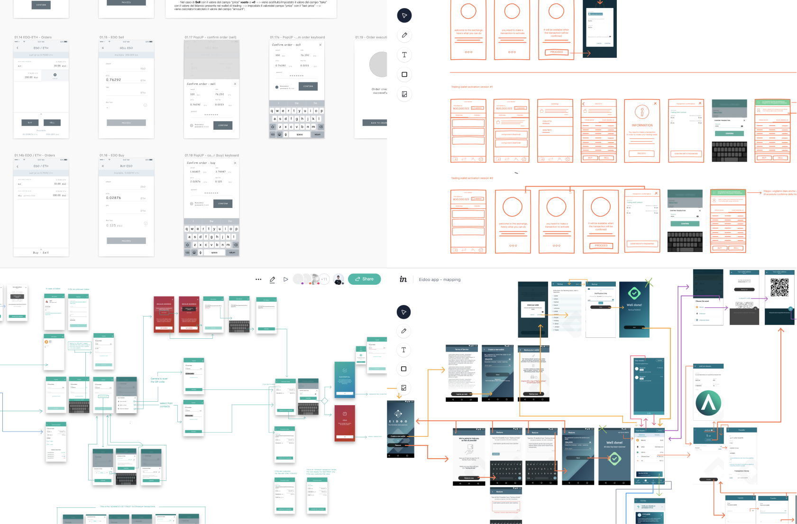
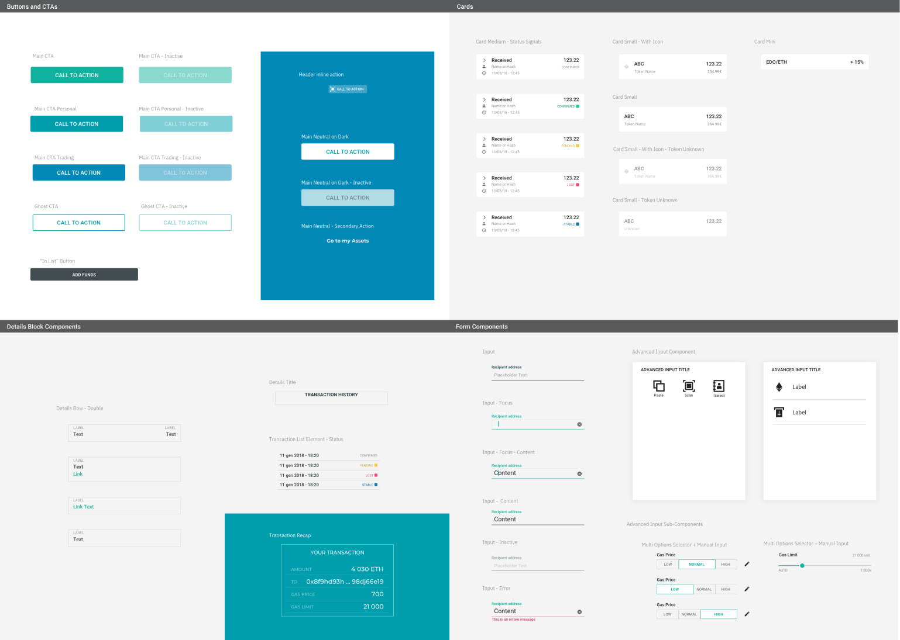
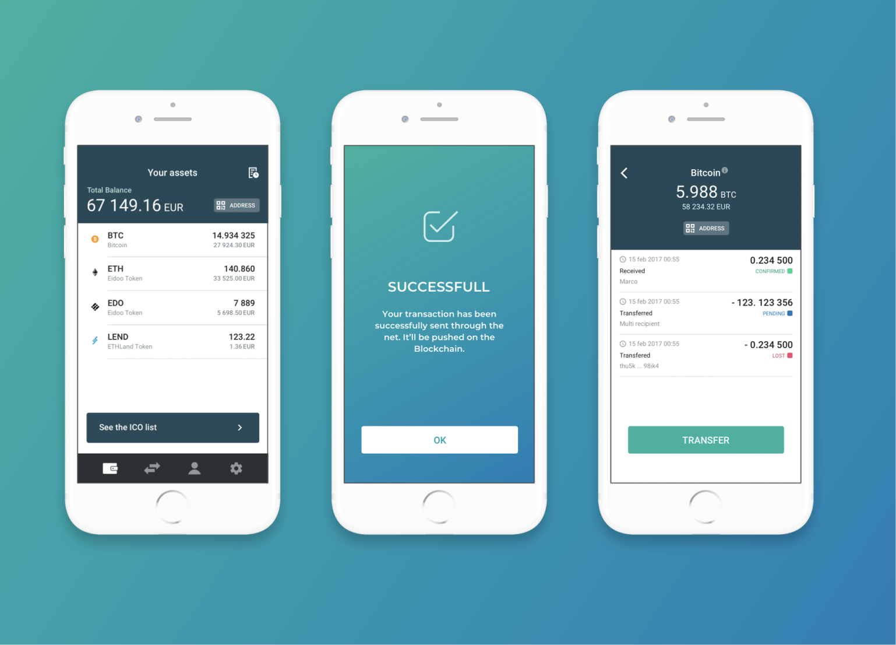

← Back to home
Eidoo is a Swiss company that deals with cryptocurrencies, in particular, its main product is the wallet of the same name. Thanks to Eidoo it is possible to receive, exchange and buy cryptocurrencies such as Bitcoin, Ethereum, EDO (the ICO of Eidoo), and many others.
We have supported the Eidoo team for more than a year in the design, evolution and maintenance of a cryptocurrency wallet. The challenge was to create a usable tool for both novice and advanced traders, together with the design of an application that interact with blockchains.
We approached the project by mapping together with the client an eventstorming and some proto-personas, within an initial discovery workshop. Then, through interviews with users, we validated and consolidated the three main Personas by distributing them within a user journey map.
Starting from the flow described by the user journey map, we created the wireframes of the first version of the application which was validated by the product owner and designed as UI mockups. From here we started a double-track agile process: Development and UX team.
I worked in the UX team with activities that included stakeholder interviews, benchmarking, see/do map, user flow, and wireframe lo-fi that allowed rapid user testing and validation by the business. But I also helped the development team in implementing UI design and interactions.
We tried to keep closer UI design with front-end, working with a modular and Atomic design logic. The formalization of guidelines within a small design system has been very useful for creating coherence within the various Eidoo microservices and applying the brand guidelines.
Feel free to ping me on Twitter ↗ or Instagram ↗, email me ↗ for any question and complete portfolio & resume.